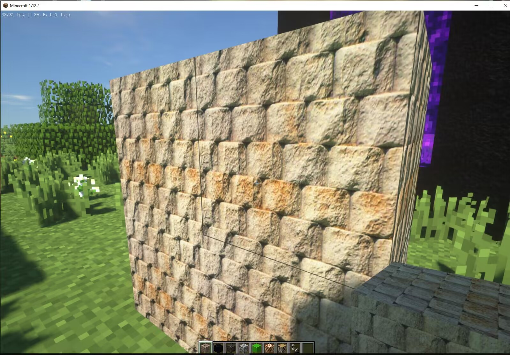
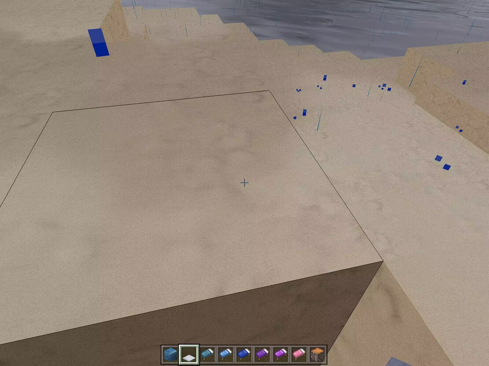
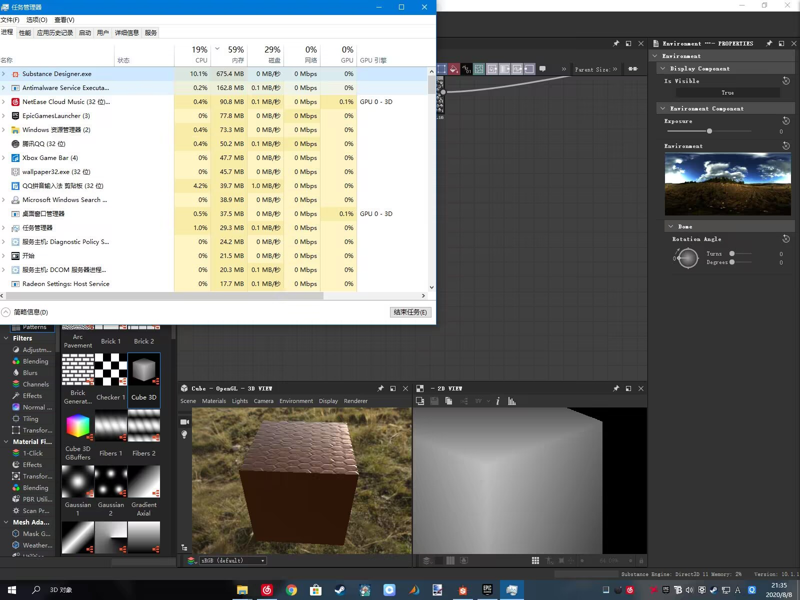
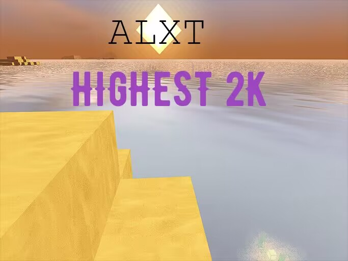
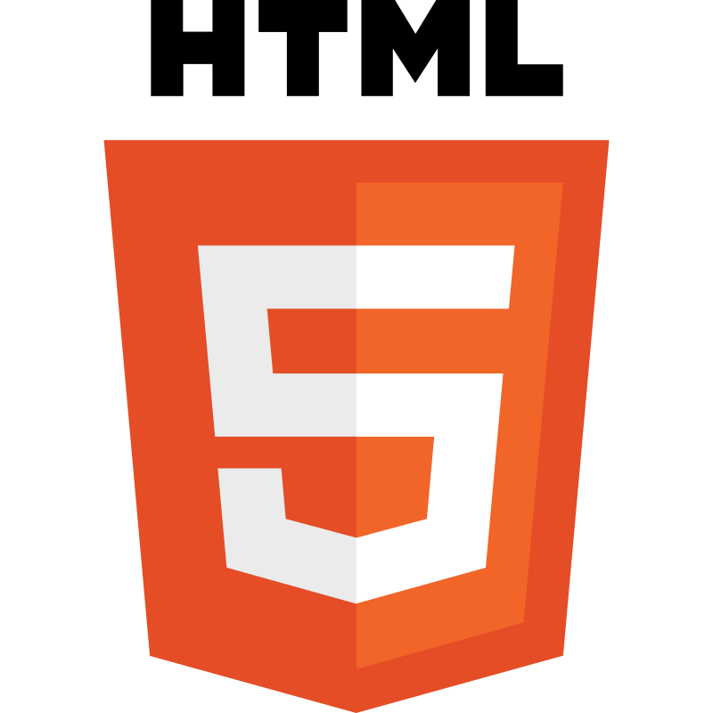
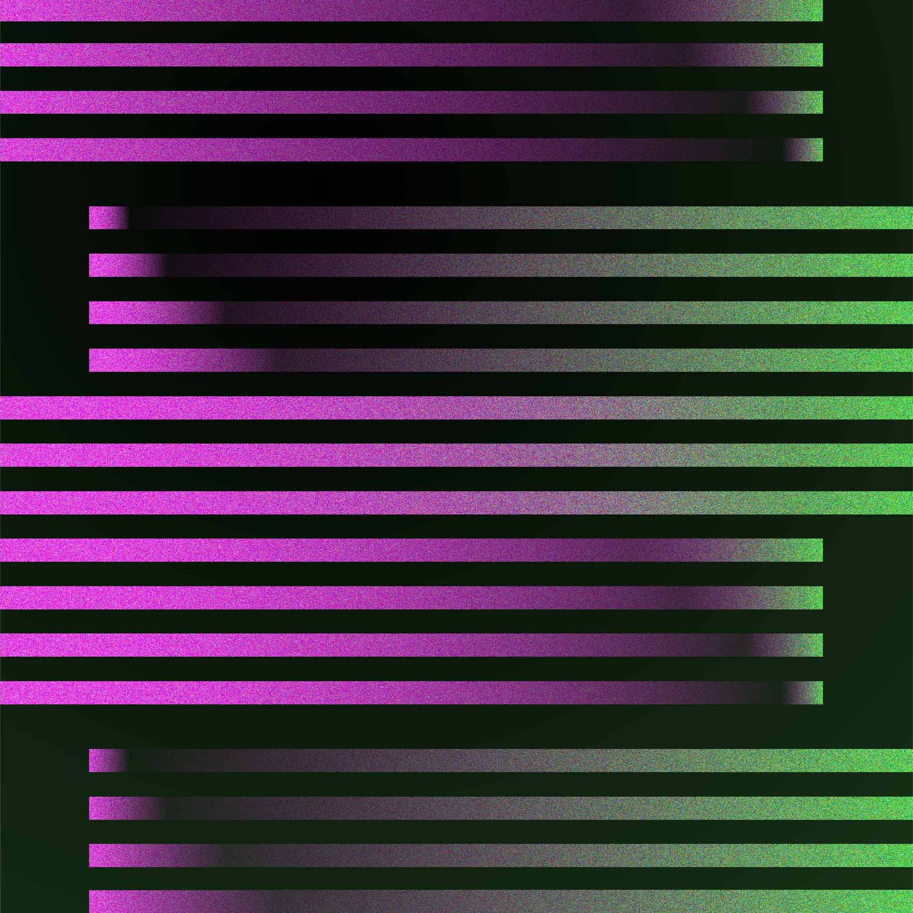

Welcome to My Page
This is the main content of the page.
Code guidance and bug fixes:ChatGPT.
笔名：Tsumuro Kazuhito
网名：XiaoYi
联系方式：XkXiaoYi475@outlook.com
很高兴见到你！我是XiaoYi。
作为自我介绍，我将发布我的人生经历。
(我觉得主要是给我自己看的，真的有其他人来这里吗？)
（也写了年收入）
顺便说一句，写法是参考Nakanikki
Nakani，谢谢你！
现状（工作环境）
职业是贸易

一台16GBRAM的电脑
键盘是CherryG803000 TKL鼠标是LogitechG502
桌布也是买Logitech设备送的
2018年之前（无收入）
这时候我还在念书，学生时代没什么好说的，我没有保留照片之类的。
我的学生时代很糟糕，可以说是我人生中的一团噩梦。
我的朋友很少，大概是我这个人很古怪。
顺便想说一句，2018年夏天我去了深圳，开始赚一些钱。
同时我在空闲时间开始制作并发布Minecraft写实超高清材质包，下面是一些当时的截图，还不错的回忆。




啊对了，在这里感谢一下MOXI在这个时期教会了我一些东西
2020年收入6-10万
结束了学业我在毕业的城市打了两个月工之后便去了香港。
经熟人的介绍去了一家公司面试，过程还算顺利，熟人又帮我搞到了银行卡以结算薪资。
由于我并没有香港的工作签证，我就这样在深圳远程办公了一年，我没有留照片。
2021年收入5万
我记不起来为什么我后来离开了深圳，总之就是回了老家在一家网吧上班，薪水很低，时薪只有八块人民币。
我再也受不了这样的生活，于是我又一次换了工作，此时已经是秋天了，希望可以多赚点钱。
说到赚钱，当时我也不知道为什么要赚钱，为了买房？买车？这些全忘了，似乎不好的回忆我总是忘记。
年底我又出了车祸把骨头撞坏了，于是就一直留在家里养伤，也没有工作了。
我怎么这么倒霉
2022年收入13万
我实在是呆不下去了，于是过完春节我就去了杭州找工作。
我当了一名消防员（虽然在职时一次都没有出过警）只记得当时流程非常复杂，需要无犯罪证明政治审查之类的，好在没问题。
后来我又换了工作，杭州一家外贸公司，会有去外地出差的情况，还算能接受。
今年的工资卡流水破了10万，想去日本玩了。
2023年收入14万
我总算是找到了稳定的工作。
在这一年，我决定开始把业余时间精力与金钱全部投入到我的业余爱好中：业余核物理。
我在年中时，因为各种各样的原因，我得了精神病，啊哈哈，别人都把我当作疯子。
我去浙江省最好的精神病院接受了治疗，由于当时的躯体症状非常严重，我忘了大约一半的事情。
我每天都接受电疗，好在它起作用了，我每天服用奥氮平，用来压制我的精神分裂症
经过一段时间的治疗我出院了，这段不好的回忆暂时到这里，现在仍需服药。
冬天
在这一时期我觉得了一件大事，那就是我打算买车了，我会把我大部分存款来买车。
但我没有驾驶证，所以我觉得考驾驶证！就这样，望展未来，我对以后的事情仍然以悲观的态度看，希望一切顺利吧，看到这里的你也是。
我厌倦了做同样的事情，所以我总是跟随自己的兴趣……不知道未来会怎样，我还会写下去的，大概..
2024年会怎样呢???
本页面由 HTML5和ChatGPT 强力驱动及支持

